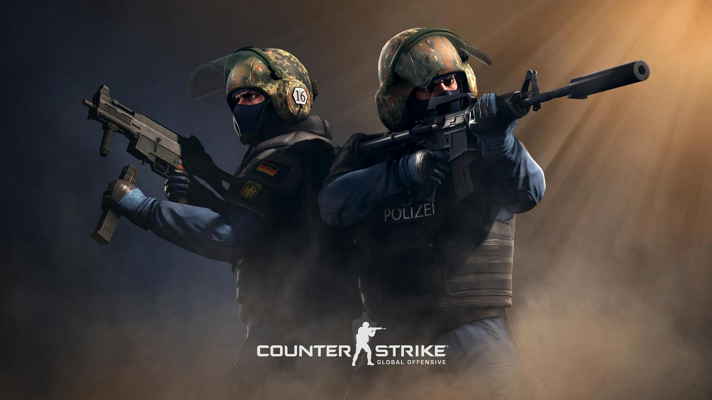

Counter-Strike: Global Offensive
Counter-Strike: Global Offensive, CS: GO (укр. Контрудар: Глобальний Наступ) — відеогра, шутер від першої особи, розроблена компаніями Valve і Hidden Path Entertainment; остання основна гра в серії ігор Counter-Strike. Вихід на ПК під управлінням Microsoft Windows і Mac та ігрові приставки Xbox 360 і PlayStation 3 відбувся 21 серпня 2012 року. 23 вересня 2014 року гра була випущена на Linux (спочатку в статусі бета-версії).